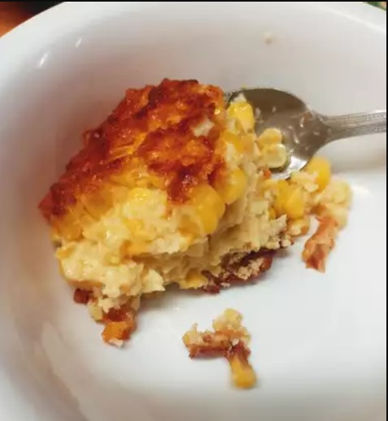

Grandma's Corn Pudding

Grandma's corn pudding is comfort food at its best.
This creamy corn casserole is easy to make with both whole kernel and cream-style corn,
resulting in a custardy pudding that will be a welcome addition to your holiday table.
Prep Time: 10 mins |
Cook Time: 1 hr |
Total Time: 1 hr 10 mins
Ingredients
- 5 large eggs
- ⅓ cup butter, melted and slightly cooled
- ¼ cup white sugar
- ½ cup milk
- ¼ cup cornstarch
- 1 (15.25 ounce) can whole kernel corn, drained
- 2 (14.75 ounce) cans cream-style corn
Directions
- Preheat the oven to 400 degrees F (200 degrees C). Grease a 2-quart casserole dish.
- Whisk eggs lightly in a large bowl. Add milk, melted butter, sugar, and cornstarch; whisk until well combined. Stir in drained corn and cream-style corn until fully blended. Pour mixture into the prepared casserole dish.
- Bake in the preheated oven until golden brown, about 1 hour.
Nutrition Facts
Calories: 277 | Fat: 12g | Carbs:40g | Protein:8g
Reference
the original recipe can be found
here
all rights reserved to original authors.
Return to main page